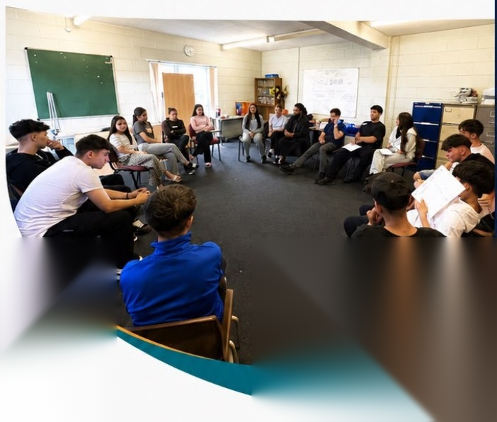

BEYOND TODAY,
BUILDING TOMORROW.
BUILDING TOMORROW.

YOUTH
RESILIENCE
PROGRAM
An 8-week interactive programme that equips young people with the confidence, emotional resilience and life skills they need to move beyond challenges and thrive in school, in relationships and in life.
Helping young
people go beyond
the barriers that
limit their potential.
people go beyond
the barriers that
limit their potential.
PROGRAMME OUTCOMES
self-esteem
resilience
strategies
awareness
& belonging
diversity
skills
negative peer
pressure
motivation
communication
skills
PROGRAMME STRUCTURE
- 1 Identity & Belonging
- 2 Understanding Emotions
- 3 Stress & Anxiety
- 4 Confidence & Self-Esteem
- 5 Culture, Diversity & Respect
- 6 Peer Pressure & Decision Making
- 7 Goals & Leadership
- 8 Reflection & Future Planning
SUITABLE FOR
- Secondary Schools
- Alternative Provision
- Colleges
- Youth Organisations
- Local Authorities
- Community Organisations
Suitable for young
people aged 11–18.
people aged 11–18.
DELIVERED BY
Tony Boncordo
Mental Health &
Well-being Coach
Well-being Coach
Lead Facilitator
WHY CHOOSE OLTRE?
- Evidence-informed and pilot-tested
- Interactive and engaging
- Practical, real-life skills
- Developed with young people, for young people
- Designed to support confidence, resilience and long-term growth